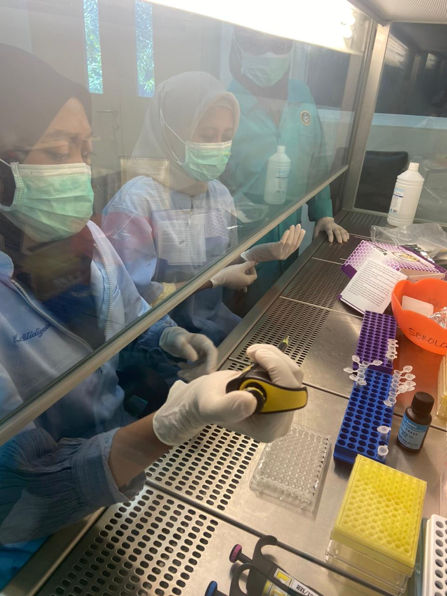
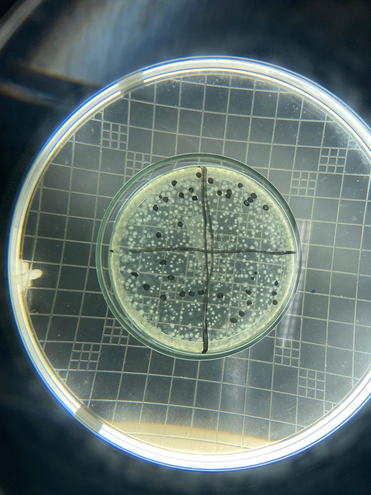
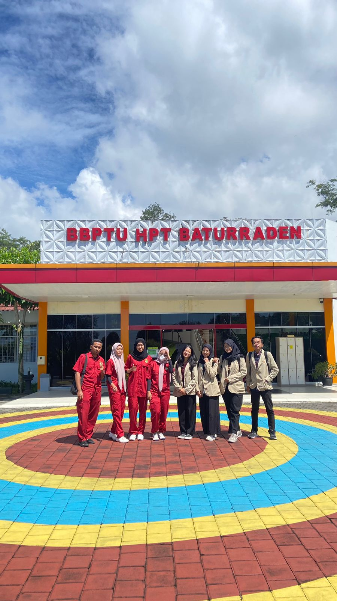
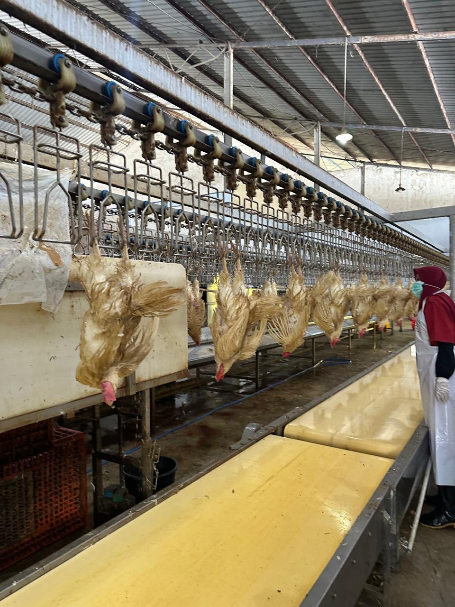
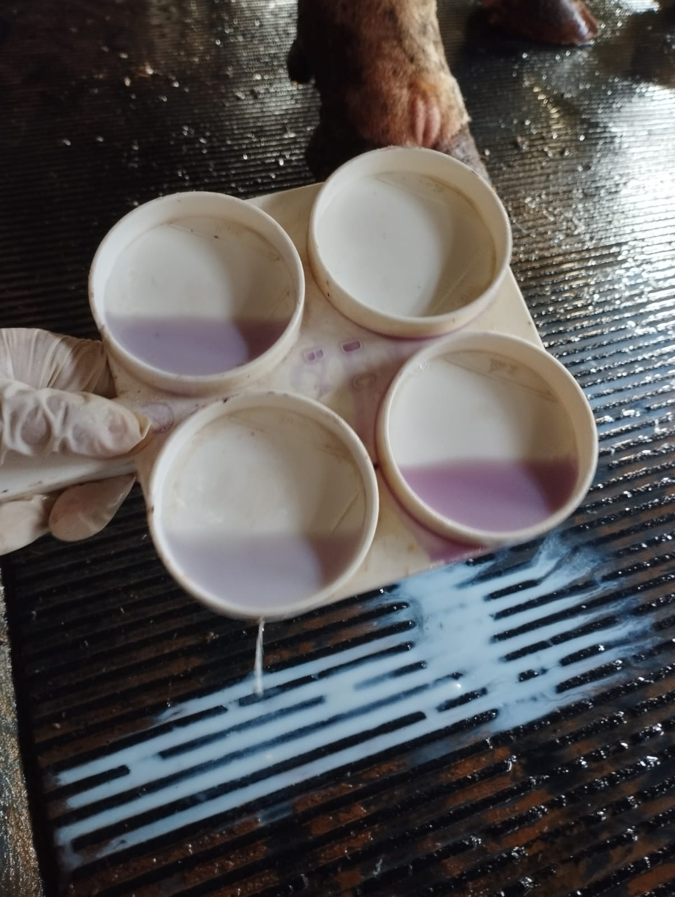

Galeri Kegiatan






Keahlian Profesional
Kesehatan Hewan
- Diagnosis dan Pengobatan
- Kesejahteraan Hewan
- Manajemen Kesehatan
Laboratorium
- Mikrobiologi
- Parasitologi
- Virologi
Manajemen Klinis
- Inseminasi Buatan
- Vaksinasi
- Pemeriksaan Kebuntingan
Keamanan Pangan
- Kontrol Kualitas
- Pengawasan Produk
- Standar Keamanan